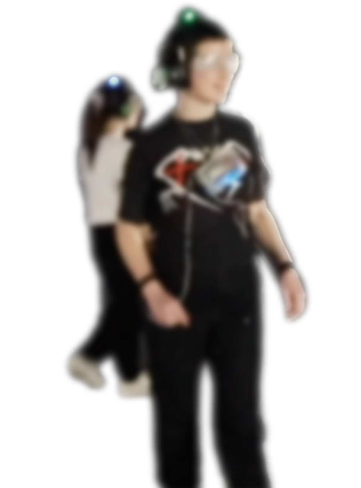

Sensenet is an experiential installation employing electrical muscle stimulation
devices, live audio streaming, and other technologies that place the participants
into a completely foreign sensory environment - an altered umwelt.
Made in collaboration with Zahraa Chorghy, Matthew Halpenny, Naila Kuhlmann, and Matthew Salaciak.
Documentation shot by Cristian Zaelzer